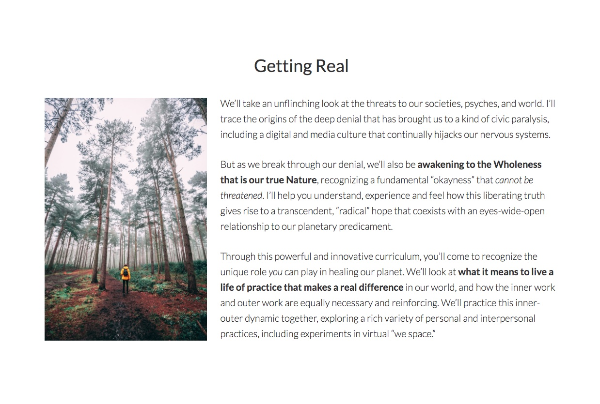
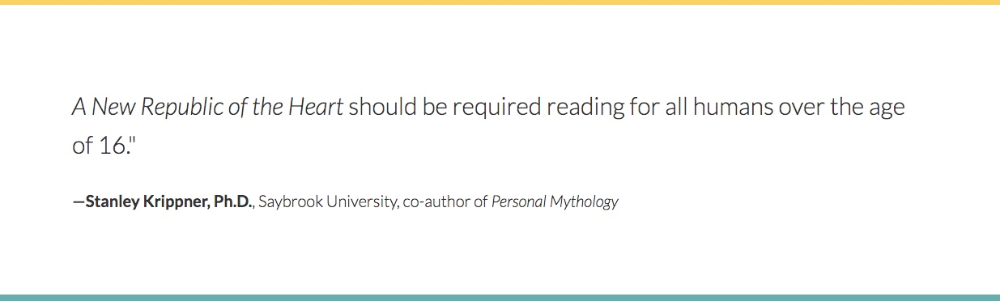
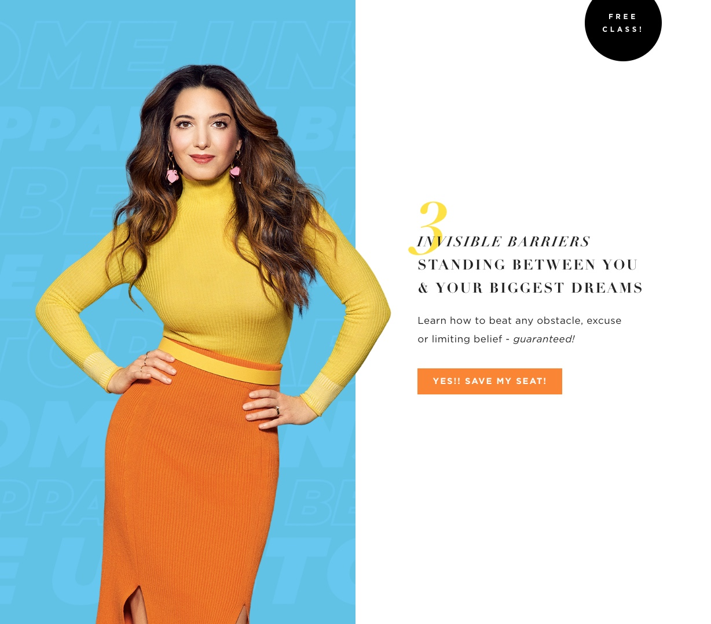
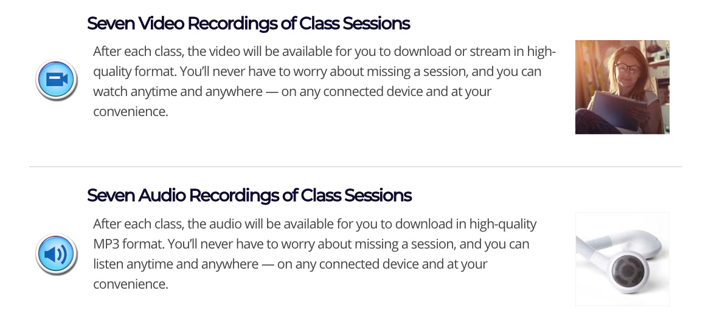

Overview
What's working:
- Most of it. More on that in a bit.
- General tone of optimistic urgency
- Juicy language
- "What You'll Learn" sections
- Course progression, the feeling of building and preparation
- Testimonials and Book Praise
- Addressing the audience directly rather than just describing the course.
- Body type: weight, size, line-height.
[ Most of it (from above) => Let's use previous content.
— The good and bad of wheel reinventing
— recognition ]
[ Addressing the marathon scroll.
- Ogilvy would be proud. => $3 widget
- Ogilvy also championed interaction
- Write idea, poor use of medium
- lateral navigation
- expansion and collapse
- Wikipedia and the fidget spinner
]
[ What can be gained by making badges out of recurring content. ]
Biggest Value Add I Can See
[ — an addition to the instructor to group communication dynamic, may already be happening ]
[ Relatedly, I assume we've completely nixed the Facebook group, yes? ]
[ Runner up: Include navigation other than scrolling within this page. We have options there. ]
[ Basically, whenever you're going to tell someone more than two things, if you can tell them what you are going to tell them first they'll be able to stick with it more easily. ]
Typographic Torts
Quote Marks
Some words and phrases are more "special" than others. Okay, so how does that sentence feel? The quotation marks have to go. I'll let a few limey comedians explain this one.
Did you watch the video? Seriously, watch the video. It is quite funny. Now, if you think that it doesn't apply, try to read the second paragraph in section four, Getting Real. Read it aloud and account for the implied differences in inflection signaled by the bold, italic, and quoted spans of text. Did you have three different inflections?
Here's why it doesn't work: Text in bold, sometimes in caps (which is mostly a mistake) is emphasized by raising our voice — which implies intensity. For italics, we lower our voice — which implies acknowledgment of a tangentially related statement or qualifier. To sound sarcastic we slow our voices down and maybe change tone a little. Increased speed isn't used to imply semantic meaning; it just makes you sound nervous. Now, a lot could be said about the fact that English uses its limited tonality to confer intensity, distraction, and sarcasm and that this is more or less the whole palette of modifiers to tone that we need to communicate. Another time.
It is sufficient for now that this is our palette, in English at least. And when you put quotes around a word or phrase, without attributing it to someone or a specific reference, it will generally relate sarcasm or irony. Deviation from this norm is communicatively and cognitively expensive. What's worse, it is an expense which one demands the reader to bear with them. That's not cool.
Repeatable Symbols
[ What we can gain by making symbols out of recurring content. ]
[ Description of improvements shown below — as soon as they happen ]

Semantic Spacing
I made a mini-tutorial about this design principle which can be found here .
Headings, even smaller ones, should use non-breaking spaces between last few words to prevent orphaned words. The below wouldn't pass for acceptable typesetting in print and should not be considered acceptable typesetting in a digital publication:
Place a max-width attribute rule on all paragraph and list elements. Those line lengths are just unruly.
Eliminate equal spacing between non-peers. This is covered a bit more in the area on the course sessions, later on. It is also addressed in the slides of the aforementioned mini-tutorial.
Content Concerns
Desired Outcomes
Overall there is a lot of language addressing how the participant will be affected which specific attributes of themselves which will be changed and some affirmations about integration of inner and outer work. The outer work, though, feels less specifically addressed in terms of application and outcome.
Flowery Language
[ With flowery language, one idea per sentence. Always follow with something concrete. Doing otherwise should be reserved for occasions of intentional exclusion. ]
[ Unpacking the sentence:
"Each week, we’ll read and discuss a new chapter, engaging it at the level of our embodied, awakened consciousness and intending to live the questions in community with fellow global citizens and planetary activists."
- affinity signaling, needed
- jargon, maybe/maybe not
- solution for that conflict, short sentence pairs
]
[ See that recurring green/red pair? That's solid gold. ]
[ Values I'm seeing signaled in the present language … ]
[ Risks I'm seeing … ]
POV CTAs
( point of view — calls to action )
We know that when we're developing marketing copy we need to tell the reader what we're hoping they'll do. And, if we convey this information in the active voice, they'll think we really have the goods. Now, let's think about this basic principle of marketing from the perspective of holistic change makers.
Okay, so there's a lot that we could talk about that is being done super well in the above example. We see that Marie has opted against the Ogilvy long form approach here. The whole lockup is simple and powerful. Our approach is quite different, so even the successful elements in this design may not apply to our communication. Let's look at that CTA for a second, though, I think there's something really special there.
Where we have the statement "Register Now" Marie has the statement "Yes!! Save my seat!" Aside from the difference in voice, what isn't the same about these two CTAs? "Register Now" is a command to the reader. "Yes, save my seat." (as I'd prefer to punctuate it) is a command from the reader. When we consider that Marie Forleo's brand and message are starkly dissimilar from Terry's, but that both teachers help people to find the strength and joy within themselves which they need to make a positive impact on the world, and think about this difference in CTA style in those terms — well — I think the case makes itself. If we are facilitators of empowerment we should be building point-of-view calls-to-action into our interfaces, interactive elements that aren't telling people what to do but rather offering them opportunities to tell us, really the website itself, what to do.
Color Correction
The color scheme feels a little off. Here is a very simple breakdown of the gross styling components of the sites color, image treatment, and type schemes.

The first two colors are very similar. Generally, I would find that to be a flaw. [no distinct color hierarchy]
[ seems like the scheme is torn between being vibrant and being relaxing ]
§1 Hero/Splash Section
Graphic design, and typography especially, is concerned with conveying information in the smoothest form possible. If I hand you a bunch of kale and say, "eat this." It is a difficult ask. If I throw that same head of kale in a Vita-Mix with a fistful of dates for a minute and pour it in a glass for you… Well, that's graphic design.
In the following image there's an optical weirdness in the visual hierarchy.

The line which comes first, "Registration for this course … " and the later line of seemingly greater size, "A New Republic of … " are set in exactly the same size and weight. The latter seems larger because it contains more capital letters. So, they are incredibly similar in their demand for attention.
Why does this matter? Well, when a person is directed to look at an advertisement of any kind they need to know where to start. Unlike a page in the middle of a novel somewhere where one just starts at the top left and it's convenient that all of the words are the same size, graphical displays often — for many good reasons — do not flow from top to bottom and from left to right. Therefor the first responsibility of a designer is to give someone a clear place to start.
[ Two different subjects which typographically look the same ]
[ Only using the font-size attribute to distinguish blocks of text makes for poor conveyance of semantic distinction between messages. Neglected and attributes and elements include: - font-weight - spacing - composition - background (partially) ]
[ Insufficient distinction isn't liberating it is stressful ]
With the expiration notice completely removed (below), we see that there is actually a decent flow to the piece. It would still feel better if there were more typographic contrast, but overall it works much better. There's a bit of a contrast issue in the details area, but we'll address accessibility considerations a little later on. For now let's move on to some of the content issues which arise here and persist throughout the landing page.

[ sloppy wording, "… directly facing that …" ]
[ I know I'm really ripping this section, but it is super critical to get this right.
- bounce and commitment.
- pattern establishment.
- opportunity for quick decision makers
]
Speaking of which, add the opportunity to register right here.
§2 Introduction
[ strike "extraordinary" ]
§3 Why not just read the book?
[ seriously, though? ]
[ Grey on gold body text fails legibility test. ]
[ Just barely, but still. ]

§4 Getting Real
[ Feels like an extension of section two, and I like that. ]
[ What was left out:
- below there's an FAQ, it has two kinds of stuff
- Distinguishing the kind that should be moved here …
- So, what all should be here:
• tech requirements
• how long are the sessions
• how much time commitment between sessions
• and after the course with groups
• recordings and access
• how many total participants
• communication expectations
• description of exercises, syllabus outline before details
]
§5 A Community of Change Makers
[ semantic conflict => "polarized", "one-sided" ]
[ failure to typographically delineate between upper section (About Community) and later (Course Description) ]
[ excellent placement of both registration button and book recommendation ]
§6 Sessions
[ This bit is long. It should be more easily skip-over-able. This is an excellent opportunity to use a toggling system. ]
[ We already did the symbol creation bit. These blocks are the most affected by that lack ]
[ Sessions one and two should not be grouped. If the first session of the course isn't a bit special it should be redesigned. ]
[ Eliminate the clause "In this session" from the entire document. It occurs twenty times and it weakens every sentence it appears in. ]
[ In session nine, sentence one, the introductory clause is not reflected in the remaining or subsequent sentences. ]
[ The sessions are the place to speak more to outcomes and specific applications. Help prospective students to place themselves into a vision of using these skills. ]
§7 Registration / Registration Closed
[ Odd prices make course feel like a commodity rather than an investment ]
[ Group rate information from FAQ should appear here ]
[ Needs better CTA once registration has closed ]
§8 Student Testimonies
[ Conflict between clouds and lightweight type. Could be fixed by applying a blur and screen to background image either before or with CSS ]
[ Typographically delineate between student and location ]
§9 What's Included
An explanation of audio and video access is given; their copy nearly identical. I know that we're toward the end of the content but that isn't any reason to either get lazy or encourage lazy reading. This sort of low production value signals a little worry in the back of the mind about how seriously the provider takes their content.
The example above is from a course offered on the Shift Network which does exactly the same thing. So, at least it's a popular mistake.
If you've ever received an email from a Nigerian prince, or something similar, then you know the alarm bells that can go off when a sell feels a little rushed.
It would actually be totally fine if these two notations were actually just one paragraph. That's the simplest fix and nothing is wrong with it.
§10 More Praise
[ Heterogeny ]
[ All well spoken. good news / bad news about that. ]
[ … ]
§11 About Terry
[ nailed it ]
[ unquote "we-space" ]
[ Italicize instead of quote marking Beyond Awakening ]
§12 Final Praise and Final CTA
[ … ]
[ … ]
[ … ]
§13 Footer
[ KIT / Get news… issue ]
[ use same tab for all social links ]
[ open contact page in that tab as well ]
Aaaaaand, fin.